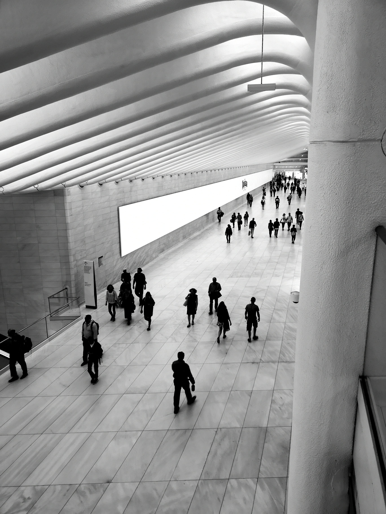

What Does This Project Do?
We set out to create a software package that takes retail store video as
input and produces useful information about the foot traffic and flow as
output.


For an image, we start with the left input and produce the right output.
The name "The Floor is Lava" comes from the visual effect of the heatmap that makes it appear that the floor is lava.
Project Evolution
We knew what project we wanted to do from the start, and we talked about which skills each of us could bring to the table. Feeling that we could pull this off, all four of us began researching computer vision, image processing, and the ethics of our project idea. Issues were brought to our attention that led us to shy away from methods, such as facial recognition, that produced personally identifiable information from the images.
After the first architectural review, we began to experiment with all the methods we had uncovered and tested their ability to meet our needs. We picked a single method and Duncan and Gabriella began to iterate on it to meet our needs. Meanwhile, Nick collected sample footage from the Untitled Fashion Show, and Michael began to put together the project website you see here. Now that we were writing code that would become part of the final project, documentation became an important focus.
Results
Using footage from the Weissman Foundry Fashion Show, we created a heat map outlining where individuals clustered around the most.There are two visuals, the video immediately below shows object tracking & heat mapping.
The video below shows the object tracking script able to successfully track and follow people along the catwalk. Additionally, the script shows how far it can detect individuals as well as its limiations with picking out people in a crowd. The number indicates the percent confindence such as .78 or .99.